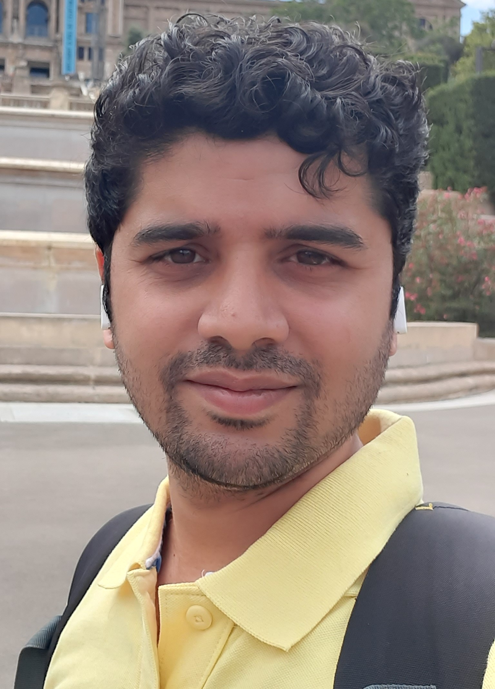
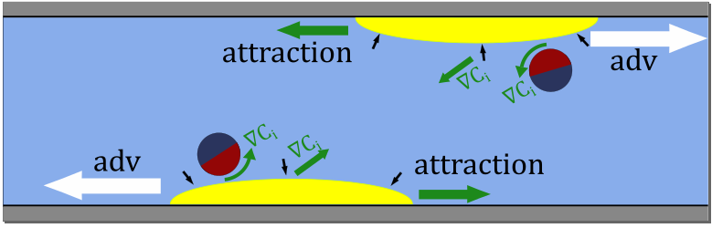

<!DOCTYPE html>
<html lang="en">
<head>
  <meta charset="UTF-8">
  <title>Prathmesh Vinze | Academic Website /title>
  <meta name="viewport" content="width=device-width, initial-scale=1">
  <link href="https://fonts.googleapis.com/css?family=Roboto:400,700&display=swap" rel="stylesheet">
  <style>
    body { font-family: 'Roboto', sans-serif; background: #f7f9fa; margin: 0; color: #222;}
    .container { max-width: 900px; margin: 40px auto; background: #fff; box-shadow: 0 4px 12px rgba(0,0,0,0.07); border-radius: 8px; padding: 40px;}
    h1 { color: #1b4686; font-size: 2.2em; margin-bottom: 10px;}
    .tabs { display: flex; border-bottom: 2px solid #dde8f6; margin-bottom: 24px;}
    .tab-link { padding: 12px 28px; cursor: pointer; font-weight: 500; border: none; background: none; color: #1b4686; outline: none; font-size: 1.05em;}
    .tab-link.active { background: #dde8f6; border-radius: 10px 10px 0 0; color: #174178;}
    .tab-content { display: none; }
    .tab-content.active { display: block; animation: fadeIn 0.4s;}
    @keyframes fadeIn { from {opacity: 0;} to {opacity: 1;} }
    ul { padding-left: 18px; }
    a { color: #1b4686; text-decoration: none;}
    a:hover { text-decoration: underline;}
    .chip { display: inline-block; background: #dde8f6; color: #225; border-radius: 12px; padding: 2px 10px; font-size: 0.97em; margin-right: 8px; margin-bottom: 4px; }
    .about-flex { display: flex; align-items: flex-start; gap: 32px; }
    .about-text { flex: 1; }
    .profile-photo { width:200px; border-radius:16px; box-shadow:0 2px 8px rgba(0,0,0,0.10);}
    @media (max-width:800px) {
      .about-flex { flex-direction: column; align-items: center; gap: 18px;}
      .profile-photo { width:160px; }
    }
    @media (max-width:600px) { .container {padding: 16px;} .tabs {flex-direction:column;} }

    /* Added for research section video/text side-by-side */
    .research-flex { display: flex; gap: 32px; align-items: flex-start; }
    .research-text { flex: 2; }
    .research-video { flex: 1; min-width: 320px; }
    @media (max-width:800px) { .research-flex { flex-direction: column; gap: 18px; } }
  </style>
</head>
<body>
  <div class="container">
    <h1>Prathmesh Vinze</h1>
    <div class="tabs">
      <button class="tab-link active" onclick="openTab(event,'about')">About Me</button>
      <button class="tab-link" onclick="openTab(event,'research')">Research</button>
      <button class="tab-link" onclick="openTab(event,'publications')">Publications & Conferences</button>
      <button class="tab-link" onclick="openTab(event,'contact')">Contact & References</button>
    </div>

    <div id="about" class="tab-content active">
      <h2>About Me</h2>
      <div class="about-flex">
        <div class="about-text">
          <p>
          Welcome to my webpage! <br> 
            <div style="height:15px;"></div>
          
            I am Prathmesh Vinze, a researcher in fluid mechanics and soft matter physics. I recently completed my PhD at LadHyX, École Polytechnique, under the supervision of Prof. Sébastien Michelin. My doctoral work focused on the collective dynamics of self-propelling phoretic microswimmers under external forcings. 
            Broadly, I am interested in using theoretical and semi-analytical methods to uncover the fundamental physics underlying complex phenomena in low-Reynolds-number flows. </p>
          <ul>
            <li><span class="chip">Ph.D. Fluid Mechanics</span> Ecole Polytechnique, IP Paris (2021–2024)</li>
            <li><span class="chip">M.S. Chemical Engineering</span> IIT Madras (2019–2021)</li>
            <li><span class="chip">B.E.(Hons) Chemical Engineering</span> BITS Pilani, Goa (2015–2019)</li>
          </ul>
          <p>
            <b>Email:</b> <a href="mailto:prathmesh37@gmail.com">prathmesh37@gmail.com</a><br>
            <b>ORCID:</b> <a href="https://orcid.org/0000-0001-8733-9178" target="_blank">0000-0001-8733-9178</a><br>
            <b>Google Scholar:</b> <a href="https://scholar.google.com/citations?user=HyvLzW0AAAAJ&hl=en" target="_blank">View my profile</a>
          <br>
              <b>CV:</b> <a href="CV_Prathmesh_Makarand_Vinze.pdf" target="_blank">Download CV</a>
          </p>
        </div>
        
      </div>
    </div>

    <div id="research" class="tab-content">
      <h2>Research Interests</h2>
      <p>
      My research focuses on developing mathematical models to investigate physical phenomena related to the transport of solute concentration, momentum, and heat. These interests have led me to explore problems in fluid mechanics, particularly the dynamics of self-propelling microswimmers, both individually and collectively, under various external forcings. Understanding microswimmer behavior is fundamental to advancing microfluidic control strategies, artificial active matter engineering, and bio-inspired transport systems. Through my work, I aim to contribute to the fundamental understanding of low Reynolds number dynamics and extend its applications to complex fluids.
      </p>
      <h3>Selected Projects</h3>
      <ul>
        <li>
          <div class="research-flex">
            <div class="research-text">
              <b>Self-organisation of phoretic suspensions under external forcings (2021–Present)</b>
              <p>In this work, we numerically analyse using a continuum kinetic model the dynamics and response to shear of dilute and confined suspensions of chemotactic phoretic particles that reorient and drift toward the chemical solutes released by their neighbours. We show that a 1D transient steady distribution driven by the effect of confinement is a common feature for the confinement and shear rate intensities considered. Depending on the strength of confinement and background shear, the system relaxes into three distinct regimes. In a second step, the feedback effect of the active stresses in explored where we study the rheological behaviour of the suspension. We show that the rheological behavior strongly depends on the self-organization regime which can be controlled using shear and confinement strength. 
            Building on the insights of suspension dynamics in the presence of shear and confinement, we move our focus on controlling collective dynamics through external solute fields, demonstrating how chemically active patches at walls can influence suspension behavior. This study is currently being prepared for journal submission. Here we have identified key mechanisms governing self-organization in confined shear flows and demonstrated how external solute fields can be used to actively control collective dynamics, thereby advancing our understanding of phoretic swimmer behavior.
              </p>
            </div>
            <figure class="research-video">
              <video id="myvideo" width="320" controls>
                <source src="videos/2D_unsteady_Fi.mp4" type="video/mp4">
                Your browser does not support the video tag.
              </video>
              <figcaption>The 2D periodic state of the suspension.</figcaption>
              <div style="height:20px;"></div>
                
                <figcaption>Schematic of the 2D state showing the forces acting on the aggregates.</figcaption>
            </figure>
          </div>
        </li>
        <li>Effect of solute advection on the swimming velocity of a Janus particle (2021)
          <p>In this work, we develop a theoretical framework to capture weak advective effects on the swimming velocity of an active particle under the influence of an external concentration gradient. Using Péclet number as a perturbation parameter, we employ a singular perturbation technique along with the method of matched assymptotic expansions to evaluate the concentration field up to 𝑂⁡(Pe). Consequently, exploiting the Lorentz reciprocal theorem, an analytical expression for the translational velocity valid up to 𝑂⁡(Pe) is obtained.</p>
        </li>
        <li>Dynamics of an artificial swimmer in external concentration gradient (2020–2021)
          <p>This article aims to develop a theoretical framework to study the motion of a Janus particle in an externally imposed linear concentration gradient. The external solute gradient results in an additional slip contribution resulting in reorientation and a drift translational velocity. We study the dynamics of the particle based on the relative strength of the external gradient (compared to the self-generated gradient) captured by a non-dimensional activity number. Using the Lorentz reciprocal theorem, an analytical expression for the rotational and translational velocity is obtained. </p>
        </li>
        <li>Cross-stream migration of a particle/drop in Poiseuille flow (2019–2020)</li>
      </ul>
    </div>

    <div id="publications" class="tab-content">
      <h2>Peer-Reviewed Publications & Conferences</h2>
      <ul>
        <li>
          <b>Self-organization of autophoretic suspensions in confined shear flows</b><br>
          Prathmesh Vinze, Sebastien Michelin<br>
          <i>Physical Review Fluids</i>, 9(1), 014202 (2024) [<a href="https://journals.aps.org/prfluids/abstract/10.1103/PhysRevFluids.9.014202" target="_blank">PDF</a>]
        </li>
        <li>
          <b>Effect of weak solute advection on a chemically active particle under the influence of an external concentration gradient</b><br>
          Prathmesh Vinze, S. Pushpavanam<br>
          <i>Physical Review Fluids</i>, 6(12), 124201 (2021) [<a href="https://journals.aps.org/prfluids/abstract/10.1103/PhysRevFluids.6.124201" target="_blank">PDF</a>]
        </li>
        <li>
          <b>Motion of an active particle in a linear concentration gradient</b><br>
          Prathmesh Vinze, Akash Choudhary, S. Pushpavanam<br>
          <i>Physics of Fluids</i>, 33(3), 032011 (2021) [<a href="https://pubs.aip.org/aip/pof/article/33/3/032011/1063837/Motion-of-an-active-particle-in-a-linear" target="_blank">PDF</a>]
        </li>
      </ul>
      <p>
        <b>See my full publication list on <a href="https://scholar.google.com/citations?user=HyvLzW0AAAAJ&hl=en" target="_blank">Google Scholar</a></b>
      </p>
      <h2>Conferences & Seminars</h2>
      <ul>
        <li>
          <b>Motion of an active particle in linear concentration gradients</b> — <i>APS Division of Fluid Dynamics</i>, Nov 2020
          <p>Presented research on particle dynamics in varying concentration fields, highlighting key transport phenomena.</p>
        </li>
        <li>
          <b>Self Organisation of phoretic suspensions in shear flow and confinement</b> — <i>European Fluid Mechanics Conference</i>, Sep 2022
          <p>Talked about collective dynamics and pattern formation in confined phoretic suspensions.</p>
        </li>
        <li>
          <b>Self Organisation and rheology of phoretic suspensions in confined shear flows</b> — <i>Hydrodynamics at Small Scales Workshop</i>, Jun 2023
          <p>Discussed experimental and theoretical advances in active suspensions under confinement.</p>
        </li>
        <li>
          <b>Rheology of phoretic suspensions in shear flows</b> — <i>Bifurcations and Instabilities in Fluid Dynamics Conference</i>, Jun 2024
          <p>Explored the impact of shear and bifurcations on rheological properties of active matter systems.</p>
        </li>
      </ul>
    </div>

    <div id="contact" class="tab-content">
      <h2>Contact & References</h2>
      <p>
        <b>Email:</b> <a href="mailto:prathmesh37@gmail.com">prathmesh37@gmail.com</a><br>
        <b>ORCID:</b> <a href="https://orcid.org/0000-0001-8733-9178" target="_blank">0000-0001-8733-9178</a><br>
        <b>Google Scholar:</b> <a href="https://scholar.google.com/citations?user=HyvLzW0AAAAJ&hl=en" target="_blank">View my profile</a>
      </p>
      <h3>References</h3>
      <ul>
        <li>Sebastien Michelin – Professor, Ecole Polytechnique, IP Paris (<a href="mailto:sebastien.michelin@polytechnique.edu">sebastien.michelin@polytechnique.edu</a>)</li>
        <li>Ludovic Bellon – CNRS Research Director, ENS Lyon (<a href="mailto:ludovic.bellon@polytechnique.edu">ludovic.bellon@polytechnique.edu</a>)</li>
      </ul>
    </div>

    <div style="text-align:center; margin-top:32px;">
      <em>Last updated: July 2025</em>
    </div>
  </div>
  <script>
    function openTab(evt, tabId) {
      var i, tabcontent, tablinks;
      tabcontent = document.getElementsByClassName("tab-content");
      for (i = 0; i < tabcontent.length; i++) {
        tabcontent[i].classList.remove("active");
      }
      tablinks = document.getElementsByClassName("tab-link");
      for (i = 0; i < tablinks.length; i++) {
        tablinks[i].classList.remove("active");
      }
      document.getElementById(tabId).classList.add("active");
      evt.currentTarget.classList.add("active");

      // Video autoplay and speed control when switching to Research tab
      var video = document.getElementById('myvideo');
      if (video) {
        if (tabId === 'research') {
          video.playbackRate = 2; // Set desired speed
          video.currentTime = 0;  // Start from beginning
          video.play().catch(function(e){
            // Autoplay may require muted for some browsers, ignore error
          });
        } else {
          video.pause();
        }
      }
    }
  </script>
</body>
</html>
